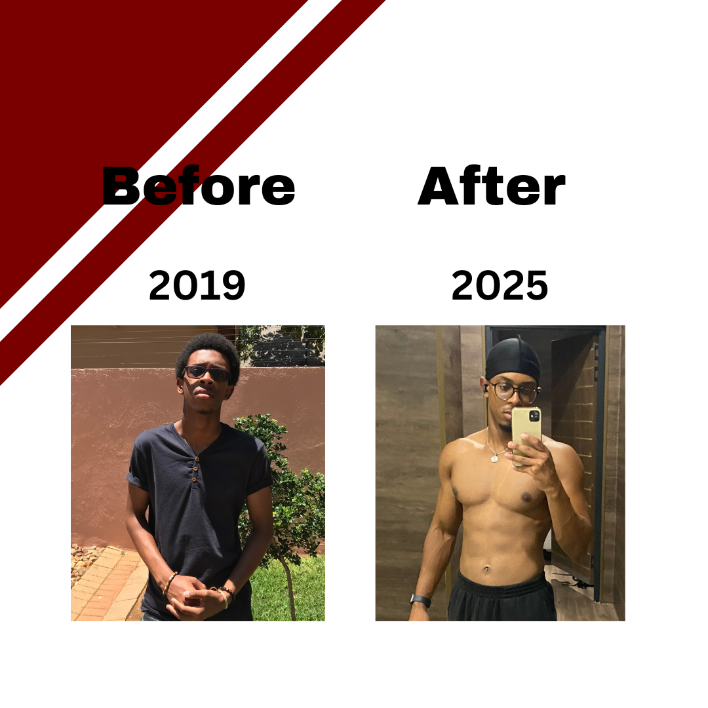

My Story
I vividly recall the days when I felt skinny. I remember feeling socially awkward and not having confidence in myself. Growing up reserved, with a small frame, I constantly battled feelings of inadequacy, compounded by remarks about my skinny stature. The comments stung, but they also sparked a fire within me to enact change
In early 2019, I made a pact with myself to start making a change. I was done feeling sorry for myself so I started my fitness journey. Consistent gym sessions became my sanctuary, a place where raw emotion and a determination to improve thrived. When 2020 forced me to adapt my routine to home workouts, it became a pivotal chapter in my journey. No longer was I comparing myself to others; it was me versus the person in the mirror
Now, three years on, I look at the mirror with pride. I finally have confidence and no sense of social anxiety at all. The journey hasn't been easy, but the transformation speaks volumes. Those who knew me before see the change, not just in my physique but in my confidence and spirit. Not to mention my mindset and mental state
If you're starting out on your fitness journey or you're thinking about starting but haven't taken the plunge Just Start Now. It may seem like it isn't worth all the pain and effort but trust me it definitely is. You'll never regret looking and feeling better
There's a lot of information online on how to build muscle and improve your physique. It took me 5 years to finally figure out how to actually build muscle, gain weight and see tangible results. If you're just starting out and you don't know where to begin and you don't want to have to go through trial and error like I did just DM the word "Help" and I'll get right back to you with a solution. I look forward to helping you see real results
